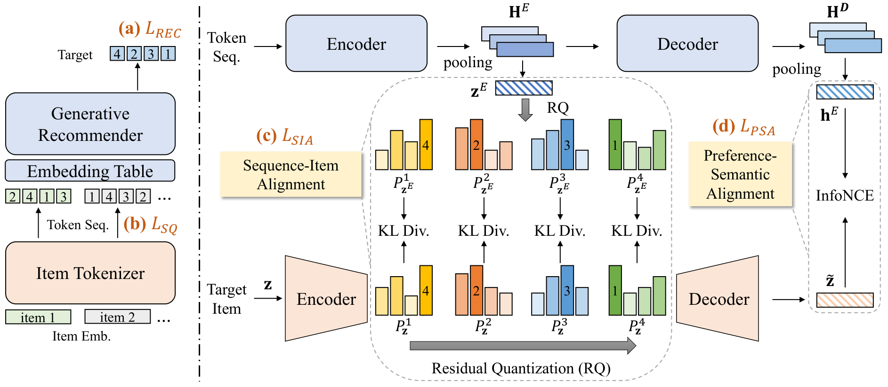

ETEGRec: Generative Recommender with End-to-End Learnable Item Tokenization
Подробное саммари статьи:
Авторы: Enze Liu, Bowen Zheng, Cheng Ling, Lantao Hu, Han Li, Wayne Xin Zhao.
Аффилиации: Renmin University of China; Kuaishou Technology.
1. Коротко: о чем статья
ETEGRec предлагает end-to-end generative recommender, где item tokenizer и autoregressive recommender обучаются как связанная система. Проблема, как и в DIGER/LETTER: если tokenizer обучать отдельно, его semantic IDs могут быть удобны для reconstruction, но не оптимальны для recommendation.
Вклад ETEGRec - dual encoder-decoder architecture и recommendation-oriented alignment strategy. Метод связывает representation user sequence, item tokenizer codebook и reconstructed item semantics через две alignment цели.
2. Архитектура

ETEGRec состоит из двух основных компонентов:
- Item tokenizer. Кодирует item в discrete token sequence и reconstructs semantic representation.
- Generative recommender. По user history генерирует token sequence следующего item.
Чтобы эти части не жили отдельно, авторы добавляют alignment losses между sequence-side и item-side representations.
3. Две alignment цели
- Sequence-item alignment (SIA). Выравнивает sequence representation с item representation в codebook space. Это помогает decoder states быть ближе к нужному item tokenization space.
- Preference-semantic alignment (PSA). Связывает user preference representation с reconstructed semantic representation target item. Это усиливает user preference modeling.
Дополнительно используется alternating optimization: tokenizer и recommender обновляются не хаотично одновременно, а в стабильном режиме. Авторы показывают, что без alternating training качество заметно падает.
4. Эксперименты
ETEGRec тестируется на Instrument, Scientific и Game. В сравнении с traditional sequential models и generative baselines он стабильно показывает лучшие результаты. Авторы отдельно отмечают, что TIGER/TIGER-SAS выигрывают у SID/CID за счет RQ-VAE-like hierarchical semantics, LETTER силен за счет collaborative/textual signals, но ETEGRec выигрывает за счет mutual enhancement tokenizer и recommender.
В unseen-user analysis ETEGRec лучше TIGER и LETTER как на seen, так и на unseen users. Это важный сигнал: alignment помогает не только memorization, но и более устойчивому preference modeling.
5. Абляции
Удаление SIA или PSA ухудшает качество, а удаление обеих целей ухудшает сильнее. Вариант без alternating training тоже проседает, что подтверждает: end-to-end training tokenizer'а и recommender'а требует аккуратного расписания. Вариант, где берут итоговые item tokens и заново обучают recommender без end-to-end связи, тоже хуже полного ETEGRec. Значит, выигрыш не только в лучших токенах, но и в совместно выученных representations.
6. Сильные стороны
- Хорошо формулирует mutual enhancement между tokenizer и recommender.
- Alignment losses легче стабилизировать, чем полностью differentiable discrete assignment.
- Alternating optimization отражает реальную сложность end-to-end обучения.
- Есть анализ unseen users и визуализация preference-semantic alignment.
7. Ограничения
- End-to-end pipeline сложнее внедрять, чем offline tokenizer плюс frozen IDs.
- Alternating training добавляет расписание и hyperparameters.
- Стабильность item IDs при переобучении в production остается открытым вопросом.
- Метод может быть чувствителен к тому, насколько хорошо item content embeddings отражают реальные user preferences.
8. Связь с LETTER и DIGER
LETTER делает tokenizer более recommendation-aware через regularization. ETEGRec делает шаг к joint system, добавляя alignment between tokenizer and recommender. DIGER затем делает более радикальный ход: differentiable semantic ID с gradient flow через assignment. В этой линии ETEGRec - важный компромисс между modularity и end-to-end optimization.
9. Вывод
ETEGRec показывает, что просто построить хорошие semantic IDs недостаточно: recommender должен учиться в том же representation space, где живет tokenizer. Практический урок - проверять не только качество tokenization, но и alignment между decoder hidden states, user preferences и item semantic representations.